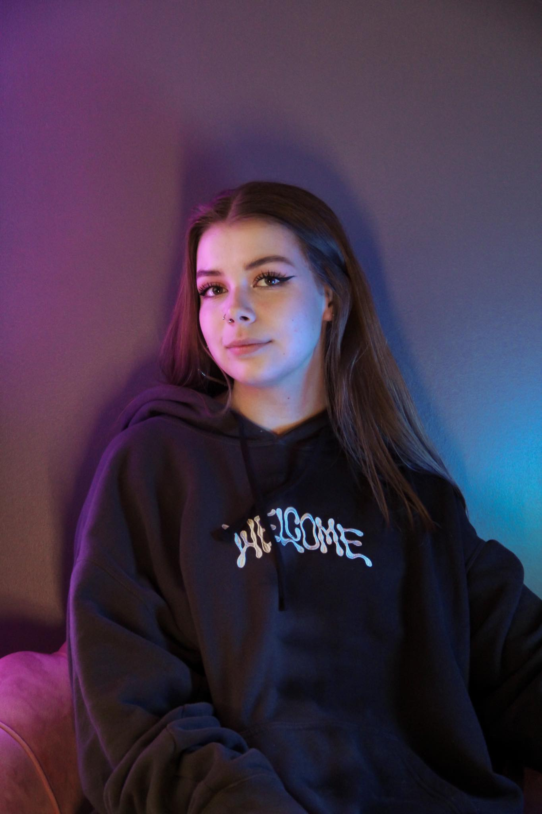

Minust
Olen Regina Kuznetsova aka reginatattoos aka derpff. Olen pärit Eestist ja vanust on mul hetkel 19 aastat. Olen joonistamise ja muu kunstiga tegelenud kogu oma elu ja see on minu jaoks üks kõige tähtsamaid asju. Minu esimene sketchbook valmis lausa lasteaias. Hakkasin 9-aastaselt eraõpetaja juures käima, kelle käest sain ma baasi joonistamises ja maalimises. Lisaks olen õppinud ka Tartu Lastekunstikoolis, kuhu astusin sisse 11-aastaselt ning mille lõpetasin 2019. aastal kiitusega.
Kunst on minu jaoks kogu mu elu. Ma maalin, joonistan, tegelen digikunsti, tänavakunsti, riiete disaini, tätoveerimise ning veel ka ruumi kujundusega. Ma usun, et kunst on igal pool meie ümber. See pole mu elu osa, kunst ongi mu elu. Inspiratsiooni saan ma igalt poolt: filmidest, päriselu juhtumitest, raamatutest ja veel ka filosoofiast. Ma arvan, et filosofeerimine on üks tähtis osa kunstnikuks olemise juures. Igal teosel on ikkagi mitu tasandit!
Mõned lõbusad faktid minust
- Ma illustreerisin 14-aastaselt luuleraamatut.
- Omasin 17-aastaselt oma särgifirmat :)
- Võitsin 15-aastaselt 1. koha Tartu linna joonistusvõistluses ning sain Tartu linna käest rahalist toetust oma projekti teostamiseks, milleks oli seinamaali tegemine Tartus, Hiinalinnas.